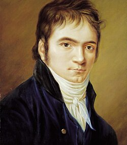

"EL MEJOR COMPOSITOR DE LA MÚSICA CLASICA"
LUDWIG VAN BEETHOVEN
LUDWIG VAN BEETHOVEN
Ludwig van Beethoven (1770-1827) fue un compositor y pianista alemán, considerado uno de los más grandes genios de la música clásica.
Nació en Bonn, Alemania, en el seno de una familia de músicos. Su padre, Johann van Beethoven, fue su primer maestro, pero con métodos severos y rigurosos.
En 1787 viajó a Viena para estudiar con Mozart, pero tuvo que regresar debido a la enfermedad de su madre. En 1792 se trasladó definitivamente a Viena para estudiar con Joseph Haydn.
A partir de 1796 comenzó a perder audición, pero esto no le impidió componer sus obras más importantes, como sus nueve sinfonías, sonatas para piano y cuartetos de cuerda.
